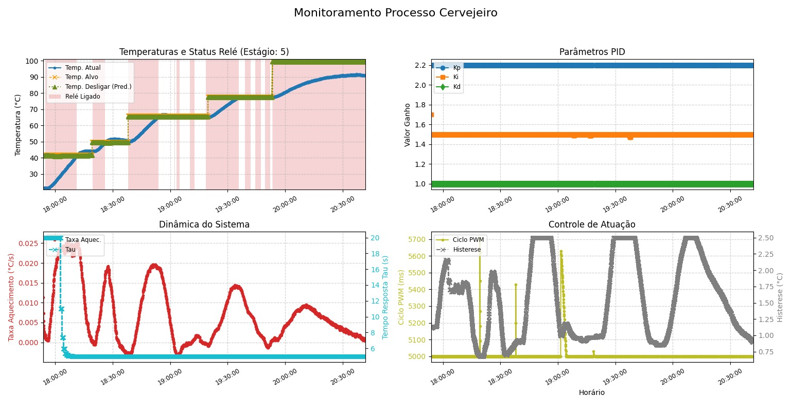
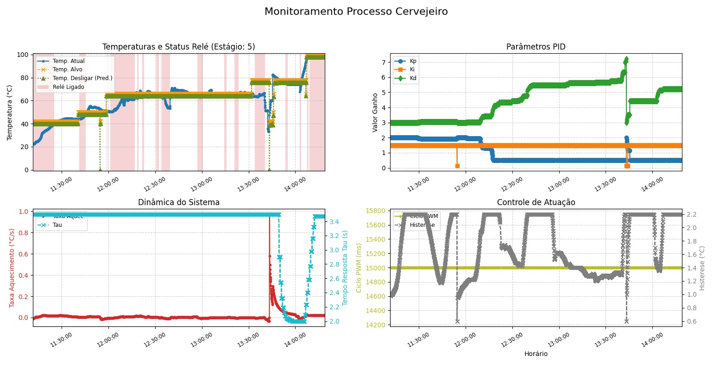

Black's Beer
"Z Enginners - Black's Beer", uma cerveja artesanal do estilo Pilsen, idealizada e produzida por estudantes de Engenharia da Computação do Centro Universitário Senac Santo Amaro. O projeto visa não apenas o domínio dos processos químicos e físicos envolvidos na produção cervejeira, mas também a valorização da identidade cultural negra, integrando elementos estéticos e simbólicos ao produto final.
A produção foi realizada em ambiente laboratorial, com o uso de equipamentos acessíveis e adaptações tecnológicas, incluindo um termômetro digital desenvolvido pelo grupo, que captava automaticamente os dados de temperatura e os transmitia em tempo real para um gráfico.
Receita
Belgian Blond Ale
Ingredientes
GRÃOS
Malte Pilsen - 0,65kg
Malte Cara Pils - 0,07kg
Malte Melanoidina - 0,05kg
Flocos de Aveia - 0,05kg
ADJUNTOS
Açúcar de Cana - 0,075kg
Morango (picado) 150g
Casca de Laranja (sem a parte branca) - 3,0g
LÚPULO
Tettnang - 8g
FERMENTO
Fermentis SafAle S33 - 2,5g
ÁGUA
Total de água: 5,7L
Instruções
RAMPA
Aquecer a água primária até atingir 42°C.
42°C - derrubar o malte e manter por 10', após estabilizar a temperatura;
50°C - por 10';
66°C - manter por 60' (fazendo o teste de iodo);
78°C - por 10' (mash out).
Em paralelo, aquecer a água de sparge até 78°C.
FERVURA
Tempo total: 60'
Lúpulo Tettnag - 8g - 50'
Açúcar - 0,075g - 15'
Casca de Laranja - 3g - 5'
Semente de Coentro - 2g - 5'
FERMENTAÇÃO
S33 - 2,5g - 20°C
ENVASE
Priming - 3g/L de açúcar
Controlador de Temperatura
Sistema de Monitoramento e Controle de Temperatura
O circuito é integrado com um código que implementa um sistema semiautomático de controle de temperatura para o processo de brassagem.
Gráfico Esperado
Gráfico Real
Esquemático

Trilha

Placa PCB

Circuito